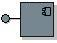

| Артефакт: Проектирование подсистемы |
|  |
|
| Артефакт-контейнер | ||
|---|---|---|
| Роли | Ответственный: | Изменен: |
| Задачи | Вход для:
| Выход из: |
| Основное описание | Подсистема проектирования является частью системы, которая заключает в себе алгоритм работы, демонстрирует набор интерфейсов и создает пакеты других элементов модели. Извне, подсистема является единым элементом модели проектирования, которая для выполнения своих ответственностей работает совместно с другими элементами модели. Видимые извне интерфейсы и их алгоритм называются спецификацией подсистемы. Изнутри, подсистема представляет собой набор элементов модели (классов проектирования и других подсистем), которые реализуют интерфейсы и алгоритмы спецификации подсистемы. Это называется реализацией подсистемы. Возможность 'инкапсуляции' подсистем проектирования представляет контраст этой возможности Рабочий продукт: Пакет проектирования, которая не реализует интерфейсы. Пакеты применяются главным образом для управления конфигурацией и организации модели, где подсистемы предоставляют дополнительную поведенческую семантику. |
|---|
| Опции представления | Представление UML: Подсистемы проектирования моделируются как компоненты UML 2.0. UML также определяет стереотип для
компонента, который называется <<подсистема>>, указывая, что его можно использовать, например, для
представления крупномасштабных структур. Представление приведено вРекомендации:
Подсистема проектирования.
Подсистемы проектирования являются важным средством разбиения больших систем на доступные для понимания части. Они особенно полезны в основанной на компонентах разработке для указания компонентов (см.Концепции: Компонент), которые должны быть разработаны независимо, иметь возможность многократного применения или замены. Следует принять важные решения относительно настройки, связанные с подсистемами проектирования:
Это решение по настройке следует зафиксировать вРабочий продукт: Относящиеся к проекту рекомендации. Представление UML 1.xВажное решение по настройке - следует ли моделировать подсистемы проектирования как компоненты UML 2.0 или подсистемы UML 1.5(см. Рекомендации: Подсистема проектирования). Дополнительная информация приведена в Различия между UML 1.x и UML 2.0 . |
|---|
| Справочные таблицы | |
|---|---|
| Рекомендации |
© Copyright IBM Corp. 1987, 2006. Все права защищены.. |